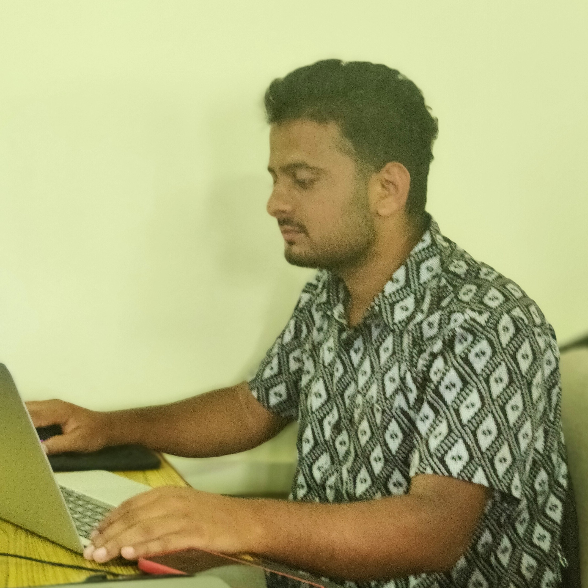

It's me Supath Dhital, with undergrad of Geomatics Engineering at IOE Western Region Campus, Pokhara. I have
been doing spatial data analysis and doing so much image analysis work. I am very enthusiastic about
exploring new information related to geoinformatics and earth science.
I have strong knowledge in Geospatial Data and have done many geospatial analysis, currently primary focus
on the Geospatial AI. If we are able to automate the whole analytical part it will be very easy for future
works and saves time too.
What i'm doing
Geospatial Data Science
Applying the Machine Learning to the Geo Data.
Cartography
The most modern and high-quality maps made at a professional level.
Remote Sensing and Photogrammetry
I have done Drone Surveys, so many analysis of satellite imagery and so many focusing to the geo data.
Surveying
I have been doing different kinds of surveying related to road, bridge, land and so many so strong
knowledge on surveying and data handling.
Mapping
Since 2019, digitizing the geographic features using different tools to extract the crucial geo data
and engaging so many sessions and engage in several project sharp my skills towards mapping.
Credentials
Landslides Risk Assessment
In this webinar, modeling the landslide prone area to automate the system for the early warning to the civilians and make them more aware about the disaster that may happen in near future was the main theme of that training.
Geoinformatics Summer School
It was an amazing experience to be part of this fruitful short course of 2022 International Geoinformatics Summer School organized by the State Key Laboratory of Information Engineering in Surveying, Mapping and Remote Sensing (LIESMARS), Wuhan University. The interactive and informative sessions about the different currently demanding and useful Geoinformatics tools, technology and its working field and how it will be implemented for the development of the nation from the well experienced professors from diverse field was the most engaging and beautiful part of this course. By the help of this summer school, I am more aware of how Geoinformatics students can contribute to sustainable development.

DGPS and LiDAR Training
Experience CSSGS' groundbreaking DGPS and LiDAR training, supported by UGC, to unlock geospatial technology's potential in precision mapping. Gain an edge in the field with comprehensive instruction, industry collaboration, and hands-on expertise. Elevate your skills and navigate the evolving geospatial landscape confidently.
DGPS and Lidar Training
Experience CSSGS' groundbreaking DGPS and LiDAR training, supported by UGC, to unlock geospatial technology's potential in precision mapping. Gain an edge in the field with comprehensive instruction, industry collaboration, and hands-on expertise. Elevate your skills and navigate the evolving geospatial landscape confidently.
The University of Alabama, Tuscaloosa, AL 35401, USA
2024 Spring-
Currently I am doing my MS in Geography in the Department of Geography and Environmental Studies, UA. I got a full funding
scholarship for my masters as I am awarded with Graduate Research Assistant (GRA) to work in the sector of flood inundation mapping
using surrogate machine learning models in Surface Dynamics Modeling Lab (SDML) under Prof., Dr. Sagy Cohen.
Pashchimanchal Campus, Institute of Engineering, Tribhuvan University
2018 — 2023
I have studied my Bachelor of Geomatics Engineering in Department of Geomatics Engineering
Pashchimanchal Campus, Pokhara Nepal. My major in Bachelor was Surveying, Cartography, Remote Sensing
and GIS, python for GIS and Geodata Visualization.
REHDON College
2016 — 2018
Grade (3.71/4, A+)
With major subject as Physics, Computer Science, Mathematics and Chemistry, I secured A+ in my +2
Science.
Projects
Preparing Orthophoto usinf UAV Imagery: Case study of Pashchimanchal
Campus
Jan 2023
Done Drone data abstraction , processing, digitizing of whole Paschimanchal Campus using Agisoft
Metashapepro and prepare the map. The complete report can be found here.
Predicting Weather Pattern of Differnt station in Kaski District
2022-2023
On behalf of the final year project (thesis) of undergraduate, Prediction of precipitation and
temperature from past meteorological data of Pokhara Domestic Airport, Lumle, Begnas and Lamachaur
station was carried out.
Experience
Graduate Research Assistant (GRA)
Jan 2024-
1. Trying to reduce computational cost by adapting ML model
2. Working to improve forecasting using a surrogate modeling approach by using non precise HAND FIM data and more accurate HECRAS Data.
Junior ML Engineer (Remote) in Omdena
Jan 2023 — April 2023
1. Predicting the Nitrogen flow from the farm used as Nitrogen fertilizer to the Nitrous Oxide: One of
the top contributors to greenhouse gas using Deep Learning on Remote Sensing data and Validating using
Ground truth data following IPCC standard.
2. Accomplished flood prediction in Belgrade, Serbia using Deep Learning from past meteorological water
level data of Danube and Sava river and precipitation data
3. Done Dark Corridors mapping for Bats in Brussel, Belgium using Computer Vision and Remote Sensing
Data Quality Intern in Humanitarian OpenStreetMap Team (HOT)
Oct 2022 — Jan 2023
In this intern,I have done mapping activities in various disaster-prone areas, capturing and digitizing
geographic features to generate comprehensive 3D geodata. This valuable resource can be utilized by
governmental bodies and NGOs for post-disaster analysis and decision-making. Additionally, I have
implemented several web maps and thematic maps to effectively visualize the open geodata, enabling a
clearer understanding of spatial information. These efforts aim to support informed decision-making and
enhance the assessment and response to natural disasters and related challenges.
Mapping the Vulnerable Places in CLARISSA
Feb 2022 — Apr 2023
CLARISSA aims to break the supply chain of child labour in Nepal and Bangladesh. In this project we
mapped the most vulnerable places about the child labour among Kathmandu city to prepare open data for
the preparedness to overcome this problem and push society towards sustainable development.
Mapping Pakistan 21 Districts on Behalf of Kathmandu Living Labs (KLL)
Feb 2022 — Apr 2023
Data Validation/Mapping 21 districts of Khyber Pakhtunkhwa, Pakistan which was supported by World Bank.